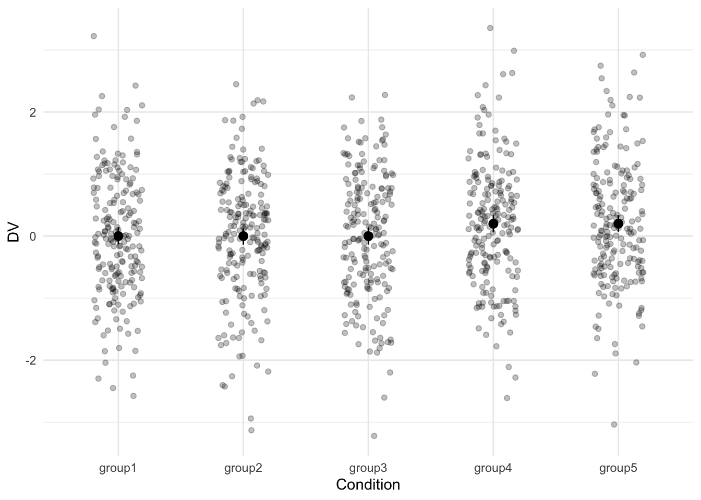

Code
# Load packages
library(MASS)
library(tidyverse)
library(viridis)
# Set the default ggplot theme
theme_set(theme_minimal())
# Set options
options(
knitr.kable.NA = "",
digits = 2
)June 2, 2022
In the field of social psychology I often see researchers analyze group differences by first running an ANOVA and then following up the ANOVA with contrast analyses to inspect specific group differences.
Say we ran a study with five different conditions. I’ll simulate some data below so we have something concrete to think about.
# Set the simulation parameters
Ms <- c(0, 0, 0, 0.2, 0.2)
SDs <- 1
n <- 195
# Produce the variance-covariance matrix
Sigma <- matrix(nrow = 5, ncol = 5, data = c(
SDs, 0, 0, 0, 0,
0, SDs, 0, 0, 0,
0, 0, SDs, 0, 0,
0, 0, 0, SDs, 0,
0, 0, 0, 0, SDs
)
)
# Simulate the values
m <- mvrnorm(n = n, mu = Ms, Sigma = Sigma, empirical = TRUE)
# Prepare the data by converting it to a data frame and making it tidy
colnames(m) <- c("group1", "group2", "group3", "group4", "group5")
data <- as_tibble(m)
data <- pivot_longer(
data = data,
cols = everything(),
names_to = "condition",
values_to = "DV"
)
# Plot the simulated data
ggplot(data, aes(x = condition, y = DV)) +
geom_jitter(width = .2, alpha = .25) +
stat_summary(fun.data = "mean_cl_boot", geom = "pointrange") +
labs(x = "Condition")
With this kind of data I can imagine at least two different goals that a researcher may have. You could have a clear a priori prediction of which groups differ or you can go on a fishing expedition and simply see which conditions differ from each other.
It looks like that worked out, so now let’s analyze the data.
Df Sum Sq Mean Sq F value Pr(>F)
condition 4 9 2.34 2.34 0.053 .
Residuals 970 970 1.00
---
Signif. codes: 0 '***' 0.001 '**' 0.01 '*' 0.05 '.' 0.1 ' ' 1
Call:
lm(formula = DV ~ condition, data = data)
Residuals:
Min 1Q Median 3Q Max
-3.237 -0.665 0.004 0.672 3.224
Coefficients:
Estimate Std. Error t value Pr(>|t|)
(Intercept) -1.34e-15 7.16e-02 0.00 1.000
conditiongroup2 5.84e-16 1.01e-01 0.00 1.000
conditiongroup3 1.34e-15 1.01e-01 0.00 1.000
conditiongroup4 2.00e-01 1.01e-01 1.97 0.049 *
conditiongroup5 2.00e-01 1.01e-01 1.97 0.049 *
---
Signif. codes: 0 '***' 0.001 '**' 0.01 '*' 0.05 '.' 0.1 ' ' 1
Residual standard error: 1 on 970 degrees of freedom
Multiple R-squared: 0.00956, Adjusted R-squared: 0.00547
F-statistic: 2.34 on 4 and 970 DF, p-value: 0.0535
Pairwise comparisons using t tests with pooled SD
data: data$DV and data$condition
group1 group2 group3 group4
group2 1.0 - - -
group3 1.0 1.0 - -
group4 0.5 0.5 0.5 -
group5 0.5 0.5 0.5 1.0
P value adjustment method: holm $emmeans
condition emmean SE df lower.CL upper.CL
group1 0.0 0.072 970 -0.141 0.14
group2 0.0 0.072 970 -0.141 0.14
group3 0.0 0.072 970 -0.141 0.14
group4 0.2 0.072 970 0.059 0.34
group5 0.2 0.072 970 0.059 0.34
Confidence level used: 0.95
$contrasts
contrast estimate SE df t.ratio p.value
group1 - group2 0.0 0.101 970 0.000 1.0000
group1 - group3 0.0 0.101 970 0.000 1.0000
group1 - group4 -0.2 0.101 970 -1.970 0.2800
group1 - group5 -0.2 0.101 970 -1.970 0.2800
group2 - group3 0.0 0.101 970 0.000 1.0000
group2 - group4 -0.2 0.101 970 -1.970 0.2800
group2 - group5 -0.2 0.101 970 -1.970 0.2800
group3 - group4 -0.2 0.101 970 -1.970 0.2800
group3 - group5 -0.2 0.101 970 -1.970 0.2800
group4 - group5 0.0 0.101 970 0.000 1.0000
P value adjustment: tukey method for comparing a family of 5 estimates ---
title: Why run ANOVAs?
description: "I often see researchers analyze group differences by first running an ANOVA and then looking at contrasts. Given that the interest is in the group differences, I don't understand why we don't run those contrasts right from the start."
date: 2022-06-02
categories:
- statistics
code-fold: true
code-tools: true
toc: true
draft: true
---
In the field of social psychology I often see researchers analyze group differences by first running an ANOVA and then following up the ANOVA with contrast analyses to inspect specific group differences.
```{r}
#| message: false
# Load packages
library(MASS)
library(tidyverse)
library(viridis)
# Set the default ggplot theme
theme_set(theme_minimal())
# Set options
options(
knitr.kable.NA = "",
digits = 2
)
```
## The data
Say we ran a study with five different conditions. I'll simulate some data below so we have something concrete to think about.
```{r}
#| label: setting
# Set the simulation parameters
Ms <- c(0, 0, 0, 0.2, 0.2)
SDs <- 1
n <- 195
# Produce the variance-covariance matrix
Sigma <- matrix(nrow = 5, ncol = 5, data = c(
SDs, 0, 0, 0, 0,
0, SDs, 0, 0, 0,
0, 0, SDs, 0, 0,
0, 0, 0, SDs, 0,
0, 0, 0, 0, SDs
)
)
# Simulate the values
m <- mvrnorm(n = n, mu = Ms, Sigma = Sigma, empirical = TRUE)
# Prepare the data by converting it to a data frame and making it tidy
colnames(m) <- c("group1", "group2", "group3", "group4", "group5")
data <- as_tibble(m)
data <- pivot_longer(
data = data,
cols = everything(),
names_to = "condition",
values_to = "DV"
)
# Plot the simulated data
ggplot(data, aes(x = condition, y = DV)) +
geom_jitter(width = .2, alpha = .25) +
stat_summary(fun.data = "mean_cl_boot", geom = "pointrange") +
labs(x = "Condition")
```
## The goals
With this kind of data I can imagine at least two different goals that a researcher may have. You could have a clear a priori prediction of which groups differ or you can go on a fishing expedition and simply see which conditions differ from each other.
It looks like that worked out, so now let's analyze the data.
```{r}
anova <- aov(DV ~ condition, data = data)
summary(anova)
lm <- lm(DV ~ condition, data = data)
summary(lm)
pairwise.t.test(data$DV, data$condition)
library(emmeans)
emmeans <- emmeans(lm, specs = pairwise ~ condition)
emmeans
```